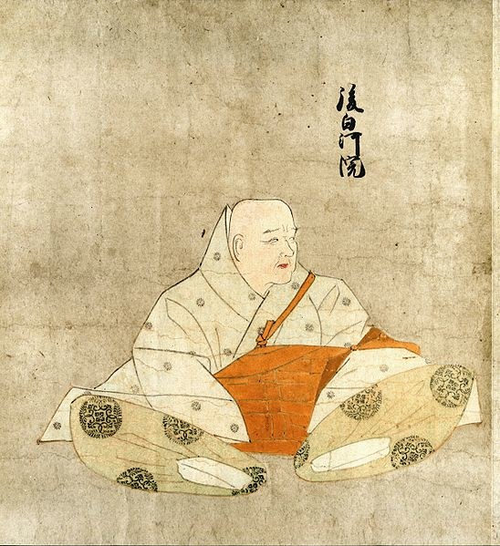

Elizabeth J. Markham, “‘For the sake of future generations:’ collecting songs, storing ways of singing in premodern Japan”
Saturday, September 28, 2013

Those who write Chinese poems, compose waka [Japanese poems], and practice calligraphy can preserve their works in writing and leave them for posterity, thus saving them from destruction. In the case of vocal music the sad fact is that once I am gone, nothing will be left behind. For this reason, I have committed to writing the oral transmission of imayo, hitherto never undertaken, for the sake of future generations ...(RyoÌ‚jin-hishoÌ‚ kudenshuÌ‚ æ¢å¡µç§˜æŠ„å£ä¼é›† transl. Kim (1994))
When Retired Emperor Go-Shirakawa 後白河 (1127-1192) writes – or is held to write – in 1169, towards the end of the Heian period (794–1192), that “for the sake of future generations” he had “committed to writing the oral transmission” he had received for performing the repertory of popular-song of his day known as imayoÌ‚ 今様, not only does he confront us with devices of orality and writing in transmission of poetry and song, but he reminds us of the essential presence of the singing voice for a song to be a song at all: poems might be transmitted in writing, he points out, songs are carried in their singing. In the same breath, expressing his fear that once he is gone “nothing will be left” of songs entrusted to him over year-long face-to-face trans- mission he calls up the fragility for repeatabilty and passing-down of song-singing that is inherent in the perishable human body, with its consequently impermanent mind, memory, voice, and ear – the very ingredients of song performance and recep- tion. So what of this delicate timebound thing that is a song would a singer-collector of songs in premodern Japan have mustered up and then tried to capture on paper to be able to leave it “for posterity”’ afterall, in a durable, re-singable form.
This question, my paper suggests, brings with it others of fixation of once im- provisatory procedures for vocal rendition of verse, of selection and repertory, of canon, and apparently of the possibility nevertheles of producing new songs in the style of established repertory. In tales of actual vocal performances, then, do we con- front spontaneous processing of a verse (whether newly made or from a collection of verse “suitable for singing”) or a performance of a song learnt off from stabil- ized repertory? And if the former, is this spontaneity supported through an own or a via a teacher’s internalization of rules nevertheless carried in the written, as Go-Shirakawa had hoped? A question, perhaps, of repeatability based on schematic processing, or of reproducibility from a written legacy, or of a shared “something” in between, but a question that insists on consulting the collection of implicit song- knowledge in a “living library” (Carruthers) – the singer herself.
Elizabeth Markham (Ph.D. University of Cambridge, England) is an historical ethnomusicologist working on music and culture in East Asia with a focus on the court and temple arts in medieval Japan. She is particularly interested in prosody and melody in poetry, chant and song, and in the oral and the written in performance and transmission.
Wider interests and her teaching emphases include historical ethnomusicology, cross-cultural musical encounters, Buddhism in early East Asia, aesthetic concepts in Japanese performing arts, and comparative music theory. Before coming to the University of Arkansas in 2000 she held research positions as Research Fellow at St. Catharine's College, Cambridge (England), Alexander von Humboldt Fellow at the University of Würzburg (Germany), and Leverhulme Fellow at the Queen's University of Belfast (Ireland). She spent a year of fieldwork as a novice in the gagaku orchestra of Kasuga Taisha in Nara (Japan), and undertakes ethnomusicological field-work and archival research in Japan, China, and Europe
Elizabeth J. Markham